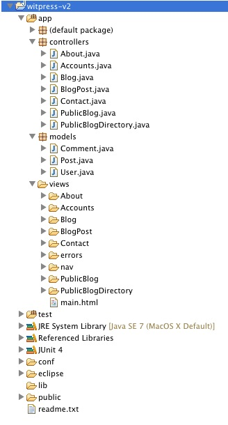
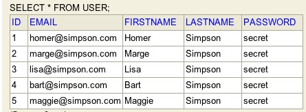
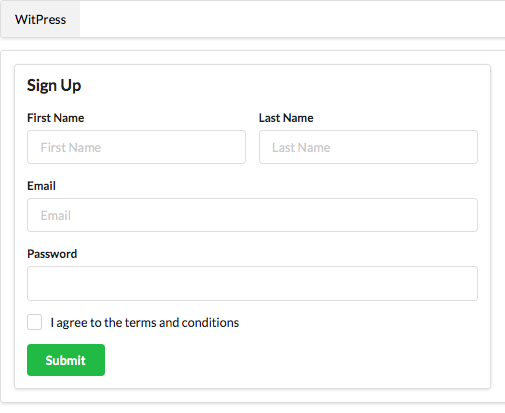
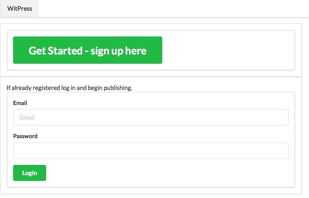
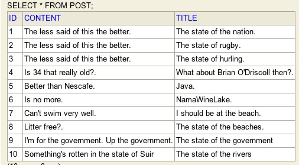
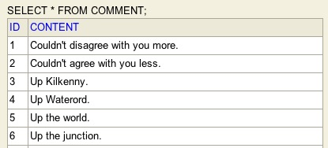
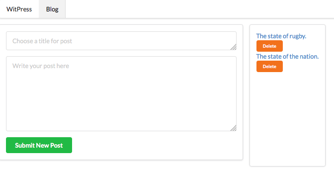
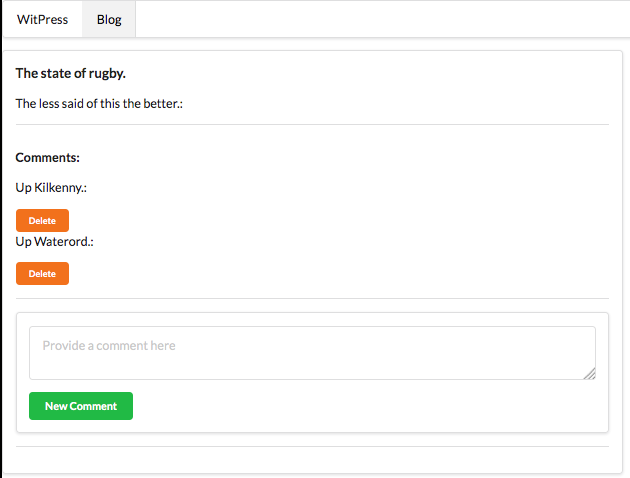
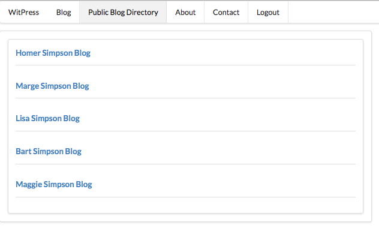

witpress, a prototype web application that allows an authenticated user to manage blog posts and comments on posts. An authenticated user may create a blog post, delete from its existing list of posts, add comments and access the public blog directory.
First some definitions:
Now the Objectives:
The directory structure used in the solutions is illustated in Figure 1.

default package
controllers package
Controllers are classes that are extensions of the Play framework and contain methods (or Actions) that process requests and send results to the client (the web page). There are 7 controllers in this application: About, Accounts, Blog, BlogPost, Contact, PublicBlog, PublicBlogDirectory.
About is a placeholder for the About box. An About box contains, typically, credits, revision information and usually a logo or icon relating to the product or company developing the product.
Accounts manages signing up or registering and signing in and out.
Blog manages the blog content.
BlogPost manages individual blogs and associated comments.
Contact is a placeholder in which to provide contact details for users.
PublicBlog : members of the public, whether or not signed in, may access individual's blog provided they are in possession of its url.
PublicBlogDirectory : manages the listing of public blogs.
models package
The model package contains classes that are extensions of the Play framework Model class. These classes manage the storage and retrieval of the client and donation details in a database.
This application has 3 model classes: User, Post and Comment.
User contains details of the client (name, email, password and so on). A database table (default name 'user') will be generated by the framework to which the data may be written and from which selected items of data may be retrieved.
Post contains data fields that define a blog. Additionally it can be associated with multiple comments.
Comment contains a field to store an individual comment.
views folder
This folder contains sub-folders that map to the controllers. For example since there exists 7 controllers there will necessarily be 7 sub-folders with the same names.
Each subfolder contains an index template (index.html) corresonding to each method in the controllers.

A user should be capable of signing on (registering) and signing in. It should be possible to open the database and verify that the user is recorded in User.
Views
Controller
Model
Sign Up page

Sign in page



Views
Controller
Model
Sign Up page
Sign in page
Create New Blog page

Individual Blog + Comments page

Views
Controller
Model
Observe the newly introduced link to Public Blogs on the nav bar.
Sign Up page
Sign in page
Create New Blog page
Individual Blog + Comments page
Public Blog Directory page
